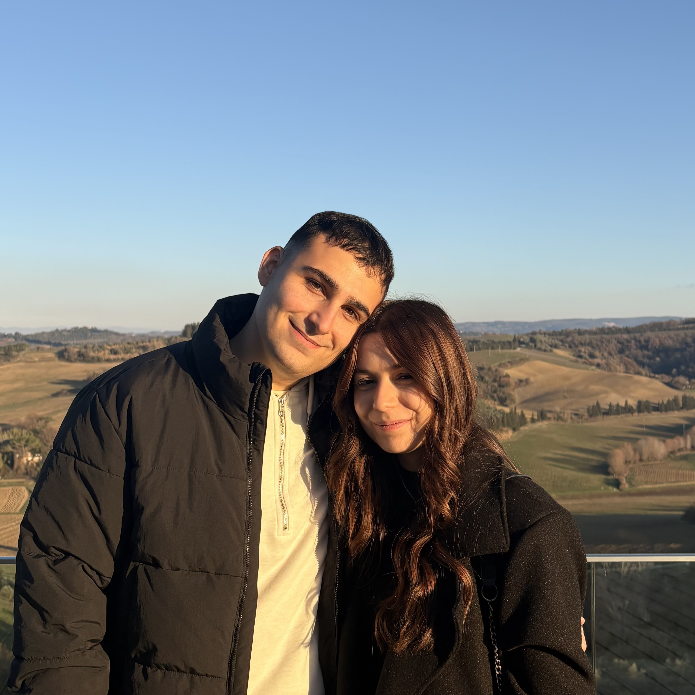

Ciao!
Questa pagina del mio sito è dedicata a raccontare alcune delle cose che mi rappresentano ma che in un CV non entrano.
L'obiettivo è quello di farmi conoscere un po' più nel profondo, come farei con un amico/a.
INDICE:
1. Curiosità su di me 🤓
Sono Gabriele, classe 2001, nato e cresciuto Lucca.
- Il mio carattere è un mix: sarei timido di natura ma sono diventato estroverso. Tuttavia, nonostante mi trovi bene in mezzo alle persone, resto un tipo che ama la solitudine e la tranquillità (adoro infatti la Toscana, la quale offre campagne e tanto verde).
- Amo il cibo, soprattutto il salato, ma il mio metabolismo non è molto d'accordo.
- Non mi interessa un granché viaggiare, ma vorrei esplorare maggiormente l'Italia e visitare il Giappone.
- Non seguo alcuno sport, preferisco praticarlo.
- Mi piacciono moltissimo auto e moto. Sto lavorando sodo per permettermele e realizzare il mio sogno.
- Sono un amante del minimalismo e della funzionalità: mi infastidiscono i giri di parole inutili e le cose belle ma complicate da usare.
- E tanti altri...
2. La Tecnologia 💻
Il mio rapporto con la tecnologia ha inizio nel 2008 con il mio primo computer e no, non sono un guru dell'informatica che ha iniziato a programmare a 10 anni, ero troppo impegnato a giocare al Nintendo DS.
Mentre gli altri bambini dicevano di voler fare gli astronauti, io sognavo di aprire un negozio di informatica.. Mai dire mai.
Questa passione mi ha spinto poi a scegliere informatica e telecomunicazioni come indirizzo di studi alle superiori.
3. Il Design
La passione per il disegno è stata instillata da mia mamma.
Ho iniziato con i personaggi degli anime che vedevo su Italia1 e K2
e, col tempo, la tecnologia ha invaso anche questo hobby, portandomi
a realizzare dei "prototipi" di smartphone e
dispositivi tecnologici.
Sognavo di creare un telefono più bello dell'iPhone, con cui avrei
fatto successo. (L'ambizione c'è sempre!)
Solo in seguito ho scoperto l'esistenza di una figura che si occupa dell'interfaccia digitale che appare su quegli stessi smartphone. Così ho deciso che avrei studiato anche per quello.
Ho quindi scelto come percorso di studi universitari Design del Prodotto e, nel frattempo, ho iniziato un master in UX/UI Design.
4. Il Gaming 🎮
Dalle medie il disegno ha lasciato spazio al PC.
Anche se solitamente sono un tipo che sperimenta, per quanto riguarda i giochi è accaduto il contrario.
A parte i giochi Pokémon, sono un appassionato di
FPS. Ho iniziato con Call of Duty,
per poi scoprire Team Fortress 2, che è stato il
mio primo amore. Il gioco con cui però mi identifico maggiormente
risale al 2016 e lo ritengo il naturale successore di TF2:
Overwatch.
Ho passato 4 anni a giocarci e ho conosciuto moltissime persone,
alcune delle quali sono diventati amici con i quali abbiamo creato
un team per partecipare a vari tornei.
5. Lo Sport 🥋
Ho iniziato con il Karate a 6 anni. Poiché anche
mio padre lo praticava da giovane, fu lui ad introdurmi a questo
sport.
Sono arrivato ad un mese dall'esame per la cintura nera quando
iniziai ad annoiarmi e mollai, buttando anni di gare e sacrifici.
Ho anche fatto un corso di nuoto per qualche mese durante la chiusura della palestra in estate, ma ricordo ben poco di quel periodo.
Dalla terza superiore in poi è stato un susseguirsi di momenti di attività ad altri di pausa. In ordine cronologico ho praticato: palestra, calisthenics, kickboxing e muay thai.
Nonostante abbia sempre fatto sport individuali mi piacerebbe provare la pallavolo, spinto dalla curiosità data dall'anime Haikyu!!.
6. Gli anime 🌀
Da piccolo ne guardavo moltissimi, erano un'ossessione.
Poi sono stati messi in secondo piano fino all'arrivo del lockdown,
durante il quale ho riscoperto questa passione, recuperando molti
titoli che mi ero perso.
Tra i preferiti si annoverano: Naruto, Attack on Titan e il suddetto Haikyu!!.
..Ci sarebbero molte altre cose di cui parlare.
Magari, in futuro, aggiornerò questa pagina con altre
mie curiosità, tratti caratteriali, pensieri e passioni..
In caso te lo stessi chiedendo:
No, niente di tutto ciò è stato scritto con AI, quindi se ci sono errori ortografici e/o sintattici vedi, anche loro, come una parte di me (da migliorare) 🤷🏻.
Ciao! 👋🏻